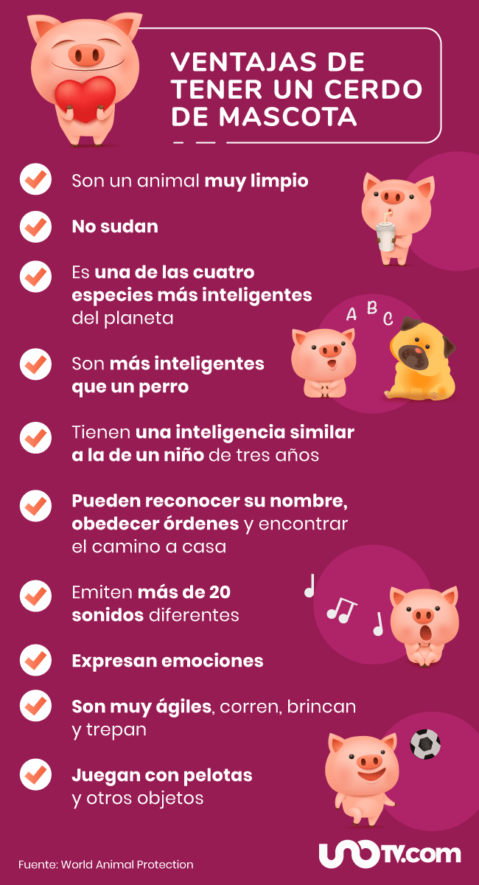

aqui podemos encontrar mas recomendaciones
1. proteccion
darles un lugar seguro donde resguardarse del frio y calor
2. la salud
llevar a nuestras mascotas al medico es muy importante
cuando notemos anomalias llevarlos al veterinario
tambien vacunarlos y asi no podran contraer enfermedades
3. la identificacion
toda mascota debe tener una placa para poderlos identificar
cuando se pierden es mucho mas facil encontrarlos con la placa
tambien existen unos chips para saber donde se encuentran si se pierden
